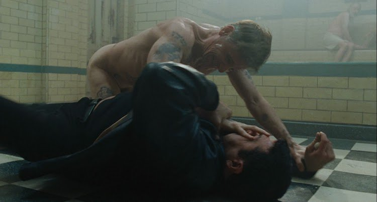

The case of Eastern Promises This is David Cronenberg's film that combines body horror, crime fiction, and spy story.
Body horror showcases grotesque or psychologically disturbing violations of the human body or to any other creature. These violations may manifest through aberrant sex, mutations, mutilation, zombification, gratuitous violence, disease, or unnatural movements of the body.
Cronnenberg's film is set in London and focuses on two characters: a Russian mafia cleaner Nikolai and a Russian-British midwife Anna. We see Nikolai both pariticpating in acts of violence (rape, clipping murder victims' fingers, etc.) as well as in acts of unusual kindness (he gives an icon to a Ukrainian sex worker, helps Anna, saves her uncle). He is a reluctant anti-hero. The character follows the famous formula from Goethe’s Faust: "Say at last – who art thou?/That Power I serve/Which wills forever evil/Yet does forever good."
In Eastern Promises, the primary site of body horror is Nikolai's body. Nikolai is an undercover FSB agent working under license from the British government. He has modified his body by getting tattoos to infiltrate the Russian mob in London. The viewers gradually discover his tattoos while he commits acts of violence and rises in the mob's rank until he earns the promotion to the vor v zakone (criminal authority in Russian mafia). He receives the tattoos singifiying his new position: the eight-pointed stars. This ultimate transformation marks the point of no return for Nikolai, a common device for Cronenberg's horroe films. The hero transforms into a monster and cannot go back to his pre-monster identity. The undercover Russian-British agent mutated into the mafia kingpin.
The bathhouse battle scene is the spectacle of the monster in action. Nikolai-the-mafia-tsar is naked but more than capable of eliminating his assailants: flesh is pierced, bones are crunched.
